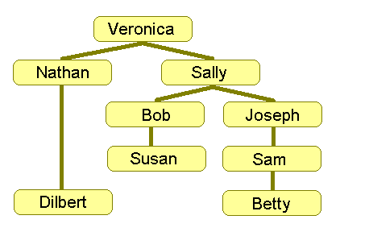

Member Search

|

Recursion is a wonderful programming tool. It provides a simple, powerful way of approaching a variety of problems. It is often hard, however, to see how a problem can be approached recursively; it can be hard to "think" recursively. It is also easy to write a recursive program that either takes too long to run or doesn't properly terminate at all. In this article we'll go over the basics of recursion and hopefully help you develop, or refine, a very important programming skill.
What is Recursion?
In order to say exactly what recursion is, we first have to
answer "What is recursion?" Basically, a function is said to be
recursive if it calls itself. Below is pseudocode for a recursive
function that prints the phrase "Hello World" a total of count times:
function HelloWorld(count)
{
if(count<1)return
print("Hello World!")
HelloWorld(count - 1)
}
It might not be immediately clear what we're doing here - so let's follow through what happens if we call our function with count set to 10. Since count is not less than 1, we do nothing on the first line. On the next, we print "Hello World!" once. At this point we need to print our phrase 9 more times. Since we now have a HelloWorld function that can do just that, we simply call HelloWorld (this time with count set to 9) to print the remaining copies. That copy of HelloWorld will print the phrase once, and then call another copy of HelloWorld to print the remaining 8. This will continue until finally we call HelloWorld with count set to zero. HelloWorld(0) does nothing; it just returns. Once HelloWorld(0) has finished, HelloWorld(1) is done too, and it returns. This continues all the way back to our original call of HelloWorld(10), which finishes executing having printed out a total of 10 "Hello World!"s.
You may be thinking this is not terribly exciting, but this function demonstrates some key considerations in designing a recursive algorithm:
- It handles a simple "base case" without using recursion.
In this example, the base case is "HelloWorld(0)"; if the function is asked to print zero times then it returns without spawning any more "HelloWorld"s. - It avoids cycles.
Imagine if "HelloWorld(10)" called "HelloWorld(10)" which called "HelloWorld(10)." You'd end up with an infinite cycle of calls, and this usually would result in a "stack overflow" error while running. In many recursive programs, you can avoid cycles by having each function call be for a problem that is somehow smaller or simpler than the original problem. In this case, for example, count will be smaller and smaller with each call. As the problem gets simpler and simpler (in this case, we'll consider it "simpler" to print something zero times rather than printing it 5 times) eventually it will arrive at the "base case" and stop recursing. There are many ways to avoid infinite cycles, but making sure that we're dealing with progressively smaller or simpler problems is a good rule of thumb. - Each call of the function represents a complete handling of the given task.
Sometimes recursion can seem kind of magical in the way it breaks down big problems. However, there is no such thing as a free lunch. When our function is given an argument of 10, we print "Hello World!" once and then we print it 9 more times. We can pass a part of the job along to a recursive call, but the original function still has to account for all 10 copies somehow.
Why use Recursion?
The problem we illustrated above is simple, and the solution
we wrote works, but we probably would have been better off just using a
loop instead of bothering with recursion. Where recursion tends to
shine is in situations where the problem is a little more complex.
Recursion can be applied to pretty much any problem, but there are
certain scenarios for which you'll find it's particularly helpful. In
the remainder of this article we'll discuss a few of these scenarios
and, along the way, we'll discuss a few more core ideas to keep in mind
when using recursion.
Scenario #1: Hierarchies, Networks, or Graphs
In algorithm discussion, when we talk about a graph we're
generally not talking about a chart showing the relationship between
variables (like your TopCoder ratings graph, which shows the
relationship between time and your rating). Rather, we're usually
talking about a network of things, people, or concepts that are
connected to each other in various ways. For example, a road map could
be thought of as a graph that shows cities and how they're connected by
roads. Graphs can be large, complex, and awkward to deal with
programatically. They're also very common in algorithm theory and
algorithm competitions. Luckily, working with graphs can be made much
simpler using recursion. One common type of a graph is a hierarchy, an
example of which is a business's organization chart:
|  |
|
In this graph, the objects are people, and the connections in the graph show who reports to whom in the company. An upward line on our graph says that the person lower on the graph reports to the person above them. To the right we see how this structure could be represented in a database. For each employee we record their name and the name of their manager (and from this information we could rebuild the whole hierarchy if required - do you see how?).
Now suppose we are given the task of writing a function that looks like "countEmployeesUnder(employeeName)". This function is intended to tell us how many employees report (directly or indirectly) to the person named by employeeName. For example, suppose we're calling "countEmployeesUnder('Sally')" to find out how many employees report to Sally.
To start off, it's simple enough to count how many people work directly under her. To do this, we loop through each database record, and for each employee whose manager is Sally we increment a counter variable. Implementing this approach, our function would return a count of 2: Bob and Joseph. This is a start, but we also want to count people like Susan or Betty who are lower in the hierarchy but report to Sally indirectly. This is awkward because when looking at the individual record for Susan, for example, it's not immediately clear how Sally is involved.
A good solution, as you might have guessed, is to use recursion. For example, when we encounter Bob's record in the database we don't just increment the counter by one. Instead, we increment by one (to count Bob) and then increment it by the number of people who report to Bob. How do we find out how many people report to Bob? We use a recursive call to the function we're writing: "countEmployeesUnder('Bob')". Here's pseudocode for this approach:
function countEmployeesUnder(employeeName)
{
declare variable counter
counter = 0
for each person in employeeDatabase
{
if(person.manager == employeeName)
{
counter = counter + 1
counter = counter + countEmployeesUnder(person.name)
}
}
return counter
}
If that's not terribly clear, your best bet is to try following it through line-by-line a few times mentally. Remember that each time you make a recursive call, you get a new copy of all your local variables. This means that there will be a separate copy of counter for each call. If that wasn't the case, we'd really mess things up when we set counter to zero at the beginning of the function. As an exercise, consider how we could change the function to increment a global variable instead. Hint: if we were incrementing a global variable, our function wouldn't need to return a value.
Mission Statements
A very important thing to consider when writing a recursive
algorithm is to have a clear idea of our function's "mission statement."
For example, in this case I've assumed that a person shouldn't be
counted as reporting to him or herself. This means
"countEmployeesUnder('Betty')" will return zero. Our function's mission
statment might thus be "Return the count of people who report, directly
or indirectly, to the person named in employeeName - not including the person named employeeName."
Let's think through what would have to change in order to make it so a person did count as reporting to him or herself. First off, we'd need to make it so that if there are no people who report to someone we return one instead of zero. This is simple -- we just change the line "counter = 0" to "counter = 1" at the beginning of the function. This makes sense, as our function has to return a value 1 higher than it did before. A call to "countEmployeesUnder('Betty')" will now return 1.
However, we have to be very careful here. We've changed our function's mission statement, and when working with recursion that means taking a close look at how we're using the call recursively. For example, "countEmployeesUnder('Sam')" would now give an incorrect answer of 3. To see why, follow through the code: First, we'll count Sam as 1 by setting counter to 1. Then when we encounter Betty we'll count her as 1. Then we'll count the employees who report to Betty -- and that will return 1 now as well.
It's clear we're double counting Betty; our function's "mission statement" no longer matches how we're using it. We need to get rid of the line "counter = counter + 1", recognizing that the recursive call will now count Betty as "someone who reports to Betty" (and thus we don't need to count her before the recursive call).
As our functions get more and more complex, problems with ambiguous "mission statements" become more and more apparent. In order to make recursion work, we must have a very clear specification of what each function call is doing or else we can end up with some very difficult to debug errors. Even if time is tight it's often worth starting out by writing a comment detailing exactly what the function is supposed to do. Having a clear "mission statement" means that we can be confident our recursive calls will behave as we expect and the whole picture will come together correctly.
In Part 2, we'll look at how recursion works with multiple related decisions, such as navigating a maze, and with explicit recursive relationships.